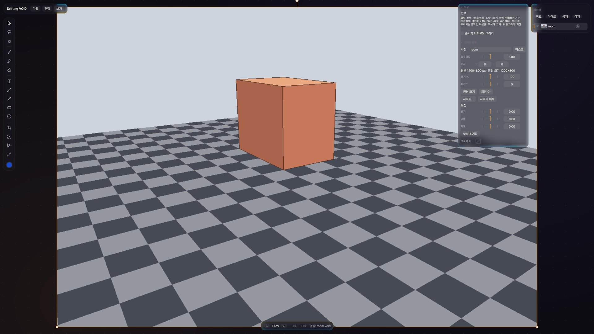
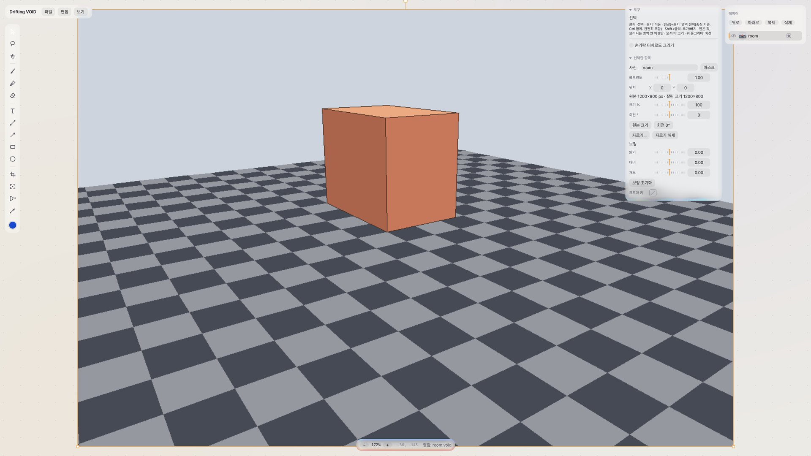
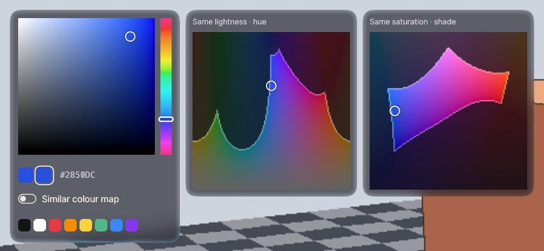
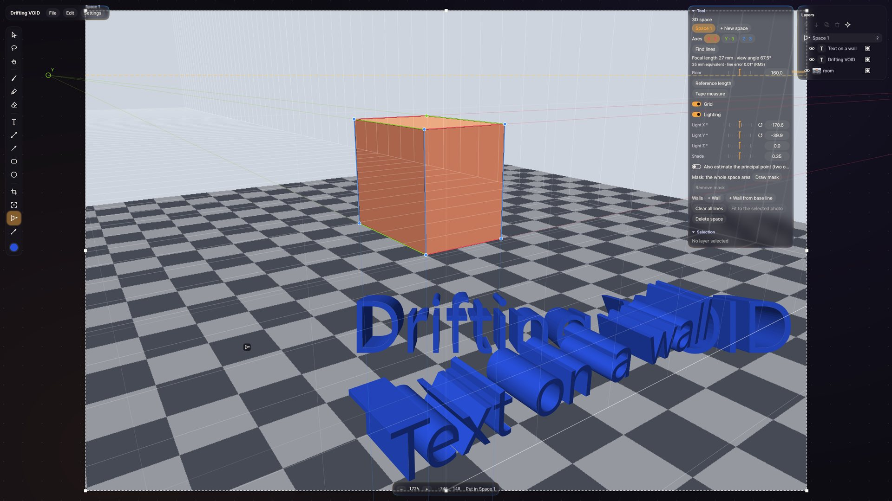
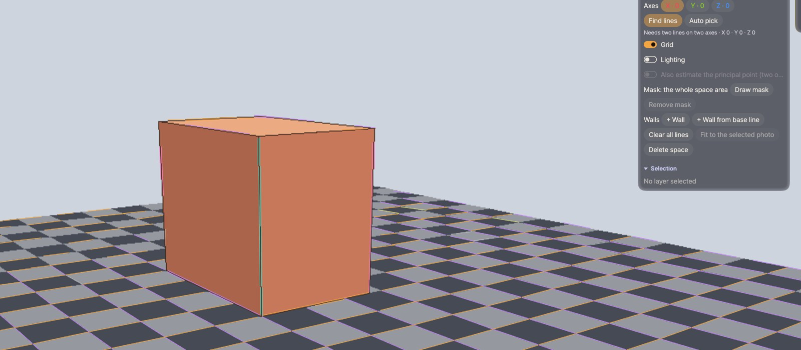
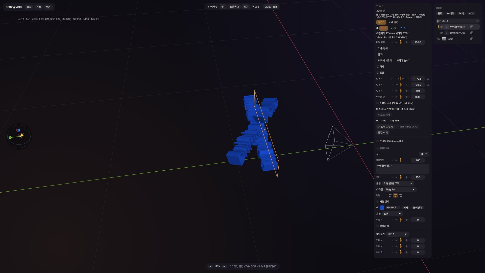
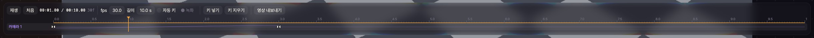

관리자 권한 없이 내 계정에만 설치합니다. 영상과 소리에 쓰는 ffmpeg는 설치하면서 GitHub에서 받아 옵니다.
설치
받은 DriftingVOID-…-Setup.exe를 실행합니다. “Windows의 PC 보호” 창이 뜨면 추가 정보 → 실행을 누릅니다. 아직 코드 서명이 없어서 나오는 창입니다.
설치 창에서 바탕 화면 바로 가기를 만들지와 ffmpeg를 내려받을지를 고릅니다.
프로그램과 바로 가기, .void 파일 연결이 설치되고, 골랐다면 ffmpeg를 받습니다. 끝나면 바로 실행할 수 있습니다.
처음 실행하면 Windows 표시 언어를 따라 한국어, 영어, 일본어 중 하나로 열립니다. 나중에 설정 › 언어에서 바꿀 수 있습니다.
ffmpeg
영상 불러오기와 재생, 소리, 영상 내보내기는 FFmpeg 프로젝트의 ffmpeg를 함께 실행해서 처리합니다. 사진, 그림, 글자, 3D 공간, 이미지 내보내기는 ffmpeg 없이도 됩니다.
이미 설치된 ffmpeg가 있으면 그것을 씁니다 (PATH 또는 winget install Gyan.FFmpeg로 설치한 것).
없으면 내려받을지 묻습니다. GitHub의 BtbN/FFmpeg-Builds 최신 정식 빌드(약 80 MB)를 받아 SHA-256 체크섬을 확인한 뒤, 설치 폴더 안의 ffmpeg 폴더에만 둡니다.
받기에 실패해도 설치는 끝까지 진행됩니다. 나중에 설치 파일을 다시 실행하면 다시 받을 수 있습니다. ffmpeg가 없을 때 영상을 넣으면 아래쪽 상태 줄에 ffmpeg 없음이 뜹니다.
업데이트와 제거
새 버전으로 업데이트: 새 릴리즈가 나오면 위쪽 메뉴 오른쪽에 알림이 뜹니다. 누르면 내려받아 설치하고, 열려 있던 프로젝트를 다시 엽니다. 설정과 프로젝트는 그대로 남습니다. 압축을 풀어 쓰는 경우에는 업데이트를 확인하지 않습니다.
제거: Windows 설정 › 앱 › 설치된 앱 › Drifting VOID › 제거. 설정 파일까지 지울지 따로 묻고, .void 프로젝트 파일은 건드리지 않습니다.
파일 위치
무엇
어디
프로그램, ffmpeg, 글꼴, 이 설명서
%LOCALAPPDATA%\Programs\DriftingVOID
설정 (도구, 최근 색, 내보내기, 화면)
%APPDATA%\DriftingVOID의 prefs.json, settings.json
브라우저에서 끌어온 영상과 소리
%APPDATA%\DriftingVOID\drops
오류 기록
%APPDATA%\DriftingVOID\crash.log
프로젝트
저장한 곳의 .void 파일. 원본 사진과 그림을 한 파일에 담고, 영상과 소리는 원래 파일을 가리킵니다.
3
02화면 둘러보기
02
화면 둘러보기
가운데의 어두운 바탕이 끝없는 캔버스이고, 도구와 속성은 그 위에 떠 있는 유리 카드에 있습니다. 강조색(호박색)은 지금 켜진 것에만 씁니다.

1234567
사진(room)을 선택한 상태. 오른쪽 카드에 사진의 속성이 나옵니다.
1메뉴 파일, 편집, 설정
2도구 막대 칸마다 단축키 한 글자 (4장 표). 마우스를 올리면 옆에 쓰는 법이 뜹니다
3현재 색 누르면 팔레트
4캔버스 끝이 없고, 사진은 원본 해상도로 놓입니다
5도구 · 선택한 항목 지금 도구의 설정과 고른 레이어의 속성
6레이어 위로, 아래로, 복제, 삭제, FX 레이어 추가 단추. 끌어서 순서 바꾸기, 두 번 눌러 이름 바꾸기
7상태 줄 배율, 좌표, 방금 한 일
카드와 패널
카드 제목(▾ 도구, ▾ 선택한 항목)을 누르면 접힙니다. 켜고 끄는 값은 스위치, 하나를 고르는 값은 나란히 붙은 단추입니다. 마우스를 올리면 짧은 설명이 뜨는 칸이 많으니, 처음엔 천천히 훑어보세요.
설정 메뉴
라이트 · 다크 · 시스템: 화면 테마.
언어: 한국어, English, 日本語.
UI 크기: 90–150 %. Ctrl+Alt++/−/0.
유리 효과(끄면 불투명 카드), 패널 그림자, 유리의 가장자리 굴절 세기와 테두리 폭, 카드의 모서리와 스무딩.
손가락으로 그리기, Tab 미리보기 시간 (10장).
Ctrl+H는 모든 UI를 숨겼다가 다시 보여 줍니다.

라이트 테마
4
03캔버스 다루기
03
캔버스 다루기
마우스, 펜 태블릿, 터치를 모두 받습니다. 펜 태블릿의 필압은 Windows Ink로 읽습니다.
보기 이동과 확대
입력
동작
휠
커서 자리를 중심으로 확대·축소
가운데 버튼 끌기 · 펜 옆 버튼 · Space+끌기 · H 도구
화면 이동
Shift+가운데 버튼 끌기
끌어서 확대·축소
Ctrl+0 · Ctrl+1
전체 보기 · 100 %
상태 줄의 배율
누르면 100 %, −+로 한 단계씩
무엇이든 끄는 도중 Space
끌던 것을 커서에 붙여 둔 채 화면만 이동
터치 손가락 하나는 화면 이동, 둘은 확대·축소입니다. 손가락으로도 그리려면 설정 › 손가락으로 그리기를 켭니다. 펜은 언제나 그립니다.
다이얼
값 대부분은 눈금 링(다이얼)으로 바꿉니다. 링을 좌우로 끌면 값이 바뀌고, Shift를 누르면 미세 조정, 휠은 한 칸씩입니다. 기본값이 있는 값은 바뀌면 ↺이 생겨, 누르면 되돌아갑니다. 다이얼을 한 번 끌거나 휠을 연달아 돌린 것은 실행 취소 한 번으로 돌아갑니다.
드롭다운
클릭하면 목록이 열립니다. 닫힌 드롭다운 위에서 휠을 굴리면 앞뒤 항목으로 바로 바뀝니다. 누른 채 아래로 끌면 목록이 열리고, 원하는 항목에서 놓으면 그것이 골라집니다.
숫자 칸
숫자 칸에는 계산식을 그대로 쓸 수 있습니다: 40*1.5, 2^3+1, 괄호도 됩니다. 칸을 비우고 Enter를 누르면 0입니다.
실행 취소
Ctrl+Z 실행 취소, Ctrl+Y 다시 실행. 재생 위치와 보기는 되돌리지 않습니다. 저장하지 않은 채 닫으려 하면 먼저 물어봅니다. 저장하지 않은 변경은 30초마다 복구 사본으로 남고, 앱이 갑자기 꺼졌다면 다음에 시작할 때 복구할지 묻습니다.
5
04그리기와 색
04
그리기와 색
브러시는 픽셀(래스터)로, 펜은 벡터 획으로 그립니다. 처음 그릴 때 그리기 레이어가 생기고, 비면 저절로 없어집니다.
도구
도구
키
설명
선택 · 올가미 선택
V · Q
6장
화면 이동
H
끌어서 이동
브러시
B
연필, 펜촉, 마커, 에어브러시, 수채
펜 (벡터)
P
필압이 있는 벡터 획. 획 하나씩 고르고 옮길 수 있음
지우개
E
브러시 픽셀과 펜 획을 지움
글자
T
5장
선 · 화살표 · 사각형 · 원
L · A · R · O
도형 레이어
사진 자르기
C
5장
내보낼 영역 · 3D 공간
F · K
12장 · 9장
스포이드
I
화면의 색을 집음
브러시 설정
프리셋마다 기본 경도와 불투명도가 따로 있습니다.
필압 → 크기, 필압 → 농도: 펜을 누르는 힘이 굵기나 진하기를 바꿉니다.
손떨림 보정: 붓이 펜을 얼마나 뒤따라올지입니다. 값이 클수록 선이 매끄럽고 더 늦게 따라옵니다. 펜을 멈추면 붓이 펜 밑까지 마저 따라옵니다.
크기: Ctrl+끌기, 또는 []. 펜, 지우개, 도형의 선 굵기도 Ctrl+끌기로 바꿉니다.
색
캔버스 아무 데서나 Alt+클릭하면 OKHSV 팔레트가 열립니다. 사람 눈에 고르게 보이도록 맞춘 색 공간이라, 밝기를 바꿔도 색감이 덜 틀어집니다.
비슷한 색 지도를 켜면 지금 색과 밝기가 같은 색, 채도가 같은 색을 두 장의 지도로 보여 줍니다. 아래 줄은 자주 쓰는 색입니다. 색 칸마다 헥스 코드를 쓰거나 복사, 붙여넣기할 수 있고, 여러 레이어를 고른 채 색을 고르면 모두에 적용됩니다.

팔레트와 비슷한 색 지도
6
05사진, 글자, 도형
05
사진, 글자, 도형
사진은 원본 해상도 그대로 들어오고, 크기를 줄여도 원본 픽셀은 남아 있습니다.
불러오기
파일을 창에 끌어 놓기, Ctrl+I, 또는 Ctrl+V로 붙여 넣기. 글자를 붙여 넣으면 글자 레이어가 됩니다.
브라우저에서 바로: 크롬이나 엣지의 이미지를 창으로 끌어 놓으면 사진으로 들어옵니다. 이미지 주소를 복사해 붙여 넣어도 사진이 됩니다. 이미지가 아닌 링크는 글자로 들어갑니다.
PNG, JPEG, WebP, BMP, TIFF, GIF, 휴대폰의 HEIC/HEIF. 움직이는 GIF는 반복 재생되는 투명 영상 레이어가 됩니다 (ffmpeg 필요).
노이즈, 픽셀화, 하프톤은 캔버스에 고정된 격자를 써서, 화면을 옮겨도 무늬가 따라 미끄러지지 않습니다. 프레임마다 변화를 켜면 노이즈가 프레임마다 바뀝니다. 비네트와 색수차는 촬영하는 카메라(없으면 내보낼 영역, 그것도 없으면 전체 내용)를 기준으로 하며, 카메라가 돌면 같이 돕니다.
커브는 그래프에서 직접 편집합니다. 빈 곳을 클릭하면 점이 생기고, 점을 끌어 옮기며, 그래프 밖으로 끌거나 두 번 클릭하면 지워집니다. 채널에서 RGB와 R·G·B를 따로 고를 수 있고, 양은 키프레임으로 움직일 수 있습니다. 점을 우클릭하면 왼쪽·오른쪽·양쪽 탄젠트를 계단, 직선, 자유, 자동 중에서 고르며, 자유는 핸들을 끌어 기울기를 정합니다. 채널을 알파로는 R, G, B 또는 L(광도)을 커브에 통과시켜 알파로 씁니다.
10
093D 공간
09
3D 공간
사진 속 평행한 모서리를 몇 개 그으면 그 사진을 찍은 카메라를 찾아냅니다. 그 공간에 글자와 그림을 세우거나 눕혀, 사진 원근에 맞게 놓습니다.

상자 모서리로 맞춘 공간에 두께를 준 글자 두 개. 카드에 초점거리, 시야각, 선 오차가 나옵니다.
공간 만들기 K
사진 위를 끌어 공간 영역을 정하거나, 사진을 눌러 그 사진에 맞춥니다.
현실에서 서로 평행한 모서리를 따라 선을 긋습니다. 축은 123 또는 XYZ로 바꿉니다: XY 바닥 방향, Z 위. 두 축에 두 줄씩, 적어도 네 줄이 필요합니다.
선 끝을 끌어 다듬습니다. 끄는 동안 돋보기가 뜨고, Shift를 누르면 경계를 강조해 보여 줍니다. Delete나 오른쪽 클릭으로 선을 지웁니다.
카메라는 그을 때마다 바로 다시 계산됩니다. 레이어를 레이어 카드의 공간 폴더로 끌어 넣으면, 보이는 모습 그대로 공간에 들어갑니다.
선 찾기와 자동 선택
선 찾기는 사진에서 곧은 모서리를 찾아 옅은 색 후보로 보여 줍니다. 후보를 누르면 지금 축의 선이 되고, 그대로 끌어 끝을 다듬을 수 있습니다. 후보는 축을 저절로 정하지 않습니다.
자동 선택을 누르면 후보 가운데 서로 직각으로 맞는 세 방향을 골라, 축마다 몇 줄씩 넣어 줍니다. 결과가 이상하면 실행 취소하고 손으로 고르세요.

선 찾기의 후보
공간 카드
기준 길이 · 줄자
사진 속 한 길이를 실제 미터로 알려 주면 다른 길이를 잴 수 있습니다
+ 벽 · + 밑선 벽
벽을 만들고, 그 안의 레이어는 벽 기준으로 움직입니다
마스크 그리기
공간이 보일 영역을 정합니다 (앞의 물체 뒤로 숨기기)
조명
입체의 면에 빛과 그늘을 줍니다 (그림자는 없음)
11
103D 작업 공간
10
3D 작업 공간
공간을 옆이나 위에서 보며 레이어를 배치합니다. 키는 블렌더와 같습니다.

위쪽 단추로 시점을, 왼쪽 나침반으로 빛 방향을 바꿉니다. 뿔 모양이 사진의 카메라입니다.
오가기
Tab을 짧게 누르면 2D 캔버스와 3D 작업 공간을 오갑니다. 누르고 있으면 바꾸지 않고 다른 쪽을 잠깐 미리 봅니다. 얼마나 눌러야 미리보기가 뜨는지는 설정 › 미리보기에서 정합니다.
시점
가운데 버튼 · 펜 옆 버튼
궤도 회전
Shift · Ctrl+같은 끌기
이동 · 확대
휠
확대·축소
137
앞 · 오른쪽 · 위 (Ctrl: 반대쪽)
5
원근 ↔ 직교
0
사진의 카메라로 보기
. · Home
선택한 것에 맞추기 · 처음 시점
옮기기 G/R/S
GRS
이동 · 회전 · 크기
XYZ
그 축으로만. 한 번 더: 레이어 자신의 축, 또 한 번: 풀기
숫자 입력
그 값만큼
Ctrl · Shift
단위로 맞추기 · 미세하게
Enter·클릭 / Esc·오른쪽 클릭
확정 / 취소
Alt+GRS
값 지우기
카드의 바닥에 세우기, 바닥에 눕히기는 고른 레이어를 바닥 위에 바로 세우거나 눕힙니다. 0 높이(격자)는 바닥이 아니라 카메라 눈높이입니다.
두께와 음각
글자, 펜 획, 브러시 그림의 두께를 올리면 입체가 됩니다. 세그먼트와 스무스 셰이딩으로 옆면을 다듬고, 음각을 켜면 표면 안쪽으로 파 들어갑니다. 공간 안의 레이어를 Alt를 누른 채 끌면 바닥에 붙어 미끄러집니다.
12
11타임라인, 영상, 소리
11
타임라인, 영상, 소리
캔버스를 그대로 움직이는 그림으로 만듭니다. 영상과 소리 기능에는 ffmpeg가 필요합니다.

타임라인 (Ctrl+T). 카메라 아래에 키가 있는 값마다 한 줄씩.
키 애니메이션
Alt+A 재생·정지, ,. 한 프레임씩.
I는 고른 것의 지금 값을 키로 넣고, Alt+I는 재생 헤드 자리의 키를 모두 뺍니다. 속성 줄마다 키 단추가 있어 값 하나씩 따로 키를 넣을 수 있고, <>로 앞뒤 키로 건너뜁니다.
레이어마다 이름 줄 아래에 키가 있는 값(위치, 크기, 회전, 불투명도, 3D 위치, 두께, 볼륨, FX 값 등)이 한 줄씩 나옵니다. 키는 자기 줄에서만 고르고, 옮기고, 지웁니다.
자동 키를 켜면 바꾼 값에만 키가 들어갑니다.
키는 끌어서 옮기고, Shift+끌기로 여러 개를 고릅니다. 재생 헤드를 Shift를 누른 채 끌면 가까운 키에 붙습니다. 키 모양은 보간 방식(부드럽게, 직선, 멈춤)을 나타냅니다.
이름 줄을 오른쪽 클릭하면 레이어가 나타나고 사라질 시점을 정합니다.
카메라와 녹화
F 도구에서 캔버스 카메라를 만들고, 위치와 크기에 키를 넣어 화면이 움직이게 합니다.
● 녹화를 켜고 그리면 펜과 브러시 획이 그린 순서와 속도 그대로 재생됩니다.
재생할 때는 미리 그린 프레임을 메모리에 모아 두어(재생 캐시), 무거운 장면도 부드럽게 돕니다.
영상과 소리 레이어
영상을 끌어 놓으면 타임라인에서 클립이 됩니다. 옮기거나 앞뒤를 자를 수 있고, 클립 밖에서는 첫 프레임이나 마지막 프레임에 멈춰 있습니다.
속성 카드에서 지금 프레임을 사진 레이어로 바꿀 수 있습니다.
소리 파일은 캔버스에 스피커 표시로 놓이고, 타임라인에서 옮기고 자를 수 있습니다. 음량에도 키를 넣을 수 있습니다.
13
12내보내기와 저장
12
내보내기와 저장
캔버스 전체가 아니라 원하는 부분만, 원하는 크기로 내보냅니다. 내보내기는 화면과 같은 GPU 렌더러로 그립니다.
영역 정하기 F
내보낼 영역 도구로 사각형을 그립니다. 무언가를 고른 채 쓰면 그것에 딱 맞게 잡힙니다.
이미지 Ctrl+E
PNG나 JPEG로 내보냅니다. 여백은 영역 바깥에 둘 거리이고, 슈퍼샘플링을 올리면 크게 그린 뒤 줄여 가장자리가 더 매끈해집니다. 배경은 투명, 흰색, 고른 색 중에서 정합니다. Ctrl+Shift+C는 영역을 바로 클립보드로 복사합니다.
Ctrl+S 저장, Ctrl+Shift+S 다른 이름으로 저장, Ctrl+O 열기, Ctrl+N 새로 만들기. .void 파일을 더블 클릭해도 열립니다.
영상과 소리 파일 사진은 .void 안에 함께 저장되지만, 영상과 소리는 원래 파일을 가리킵니다. 프로젝트를 다른 PC로 옮길 때는 영상과 소리 파일도 함께 옮겨 주세요.
14
13단축키 모음
13
단축키 모음
도구
VQH
선택 · 올가미 · 화면 이동
BPE
브러시 · 펜 · 지우개
TLA
글자 · 선 · 화살표
ROC
사각형 · 원 · 사진 자르기
FKI
내보낼 영역 · 3D 공간 · 스포이드
파일
Ctrl+NOS
새로 · 열기 · 저장
Ctrl+Shift+S
다른 이름으로 저장
Ctrl+I
사진 불러오기
Ctrl+E
이미지 내보내기
Ctrl+Shift+E
영상 내보내기
Ctrl+Shift+C
영역을 클립보드로
편집
Ctrl+Z · Y
실행 취소 · 다시 실행
Ctrl+V · D
붙여넣기(그림, 글자, 이미지 링크) · 복제
Backspace · Delete
삭제 · 비우기
GRS
이동 · 회전 · 크기
Esc
취소 (가위: 두 번이면 모드 끄기)
보기
휠 · 가운데 끌기
확대 · 이동
Space+끌기
이동 (끄는 중에도)
Ctrl+0 · 1
전체 보기 · 100 %
Ctrl+Alt++−0
UI 크기
Ctrl+H
UI 숨기기
Tab
2D ↔ 3D · 누르고 있으면 미리보기
그리기와 색
Ctrl+끌기 · []
크기 · 선 굵기
Alt+클릭
팔레트
Alt (마스크)
되살리기
타임라인
Ctrl+T
타임라인 열기
Alt+A
재생 · 정지
,.
한 프레임 앞 · 뒤
I · Alt+I
키 넣기 · 빼기
3D 작업 공간
137 · 5
앞 · 오른쪽 · 위 · 직교
0 · . · Home
카메라 · 맞추기 · 처음
XYZ
G/R/S 축 고정
15
14도움말과 라이선스
14
도움말과 라이선스
이상한 점이 있으면 사소해 보여도 알려 주세요. 아래 내용을 함께 보내 주시면 빨리 고칠 수 있습니다.
문제를 알릴 때
무엇을 하다가 어떻게 됐는지, 다시 해도 그런지.
프로그램이 갑자기 꺼졌다면 %APPDATA%\DriftingVOID\crash.log 파일.
가능하면 화면 캡처와, 문제가 생긴 .void 파일.
그래픽카드와 펜 태블릿 종류.
알려진 제한
Windows 10/11 전용입니다. DirectX 12나 Vulkan을 지원하는 그래픽카드가 필요합니다.
코드 서명이 없어 처음 실행할 때 Windows 보호 창이 뜹니다.
글꼴에 없는 글자는 다른 글꼴로 대신 그리지 않고 빈 네모로 보입니다 (의도한 동작).
아주 큰 녹화 펜 레이어는 불러올 때 잠시 느릴 수 있습니다.
재생 캐시는 메모리를 많이 쓸 수 있습니다 (최대 물리 메모리의 75 %).
ffmpeg와 라이선스
Drifting VOID는 영상 처리에 FFmpeg를 별도 프로그램으로 실행합니다. ffmpeg는 이 배포 파일에 들어 있지 않습니다. 설치 과정에서 BtbN/FFmpeg-Builds의 공개 빌드(GPL)를 받아 설치 폴더의 ffmpeg 폴더에 두며, 그 폴더의 LICENSE.txt에 라이선스 전문이, SOURCE.txt에 받은 파일 이름, 체크섬, 출처가 있습니다.
Drifting VOID는 GNU AGPL 3.0 이상으로 배포하는 자유 소프트웨어입니다. 전문과 추가 조건은 설치 폴더의 LICENSE.txt와 NOTICE.txt에 있습니다.
글자의 기본 글꼴이자 일본어 화면 글꼴인 Pretendard JP는 SIL Open Font License 1.1로 함께 배포되며, 설치 폴더의 fonts에 라이선스가 있습니다. 한국어와 영어 화면은 Pretendard 등 설치된 글꼴을 먼저 찾고, 없으면 맑은 고딕을 씁니다.
이 설명서 오른쪽 위에서 언어를 바꾸고, 인쇄로 A4 책자로 인쇄하거나 PDF로 저장할 수 있습니다. 처음에는 브라우저 언어를 따릅니다. 화면에서는 시스템 테마를 따르고, 반원 단추로 밝게·어둡게를 바꿉니다.
16
User manualWindows
DriftingVOID
Photos, drawings, text and video on an endless canvas.
Version {VERSION} · Windows 10/11 · pen tablet recommendedNovember 2026
Drifting VOIDContents
Contents
New to the app? Read chapters 1 and 2 first and look up the rest when you need it. The shortcuts fit on one page, chapter 13.
Drifting VOID installs for your account only, without administrator rights. Setup fetches ffmpeg, which video and sound need, from GitHub.
Setup
Run the DriftingVOID-…-Setup.exe you downloaded. If “Windows protected your PC” appears, choose More info → Run anyway; the app is not code-signed yet.
Choose whether to make a desktop shortcut and whether to download ffmpeg.
Setup installs the program, its shortcuts and the .void file type, and fetches ffmpeg if you chose it. The app can start as setup ends.
On its first start the app follows the Windows display language (Korean, English or Japanese). Change it any time in Settings › Language.
ffmpeg
Opening and playing video, sound and video export run ffmpeg from the FFmpeg project alongside the app. Photos, drawing, text, 3D spaces and image export work without it.
An ffmpeg already on your PC is used (on PATH, or installed with winget install Gyan.FFmpeg).
Otherwise setup asks to download one: the newest release build from BtbN/FFmpeg-Builds on GitHub (about 80 MB), checked against its SHA-256 checksum and kept only in the install folder's ffmpeg folder.
If the download fails, setup still finishes; run the installer again later to fetch it. Without ffmpeg, dropping in a video shows ffmpeg not found in the status bar.
Updating and removing
Updating: a new release shows as a notice right of the menus. A click downloads and installs it, then opens the project you had open. Settings and projects stay. A copy run from an unzipped folder does not check for updates.
Removing: Windows Settings › Apps › Installed apps › Drifting VOID › Uninstall. It asks before deleting settings and never touches .void projects.
Where files are
What
Where
Program, ffmpeg, fonts, this manual
%LOCALAPPDATA%\Programs\DriftingVOID
Settings (tools, recent colours, export, display)
prefs.json and settings.json in %APPDATA%\DriftingVOID
Video and sound dragged in from a browser
%APPDATA%\DriftingVOID\drops
Crash log
%APPDATA%\DriftingVOID\crash.log
Projects
.void files wherever you save them. Photos and drawings are stored inside; video and sound are linked to their files.
3
02A tour of the screen
02
A tour of the screen
The dark ground in the middle is the endless canvas; tools and properties live on glass cards floating over it. The amber accent marks only what is on.
1234567
The photo “room” selected; the card on the right shows its properties.
1Menus File, Edit, Settings
2Tool rail one key per tool (table in chapter 4); hover for how to use it
3Current colour click for the palette
4Canvas endless; photos keep their full resolution
5Tool · Selection the tool's settings and the selected layer's properties
6Layers buttons for up, down, duplicate, delete and add FX layer; drag to reorder, double-click to rename
7Status bar zoom, position, what just happened
Cards and panels
Click a card title (▾ Tool, ▾ Selection) to fold it. On/off values are switches; pick-one values are joined buttons. Many fields show a short tip on hover, so take a slow first look round.
The Settings menu
Light · Dark · System: the theme.
Language: 한국어, English, 日本語.
UI size: 90–150 %; Ctrl+Alt++/−/0.
Glass (off: solid cards), Panel shadows, the glass Edge refraction and Rim width, the cards' Radius and Smooth.
Draw with fingers, and the Tab Peek delay (chapter 10).
Ctrl+H hides the whole UI and brings it back.
Light theme
4
03Working the canvas
03
Working the canvas
Mouse, pen tablet and touch all work. Pen pressure is read through Windows Ink.
Panning and zooming
Input
Does
Wheel
Zoom about the cursor
Middle-button drag · pen side button · Space+drag · H tool
Pan
Shift+middle-button drag
Drag to zoom
Ctrl+0 · Ctrl+1
Fit all · 100 %
Zoom in the status bar
Click for 100 %; −+ step by step
Space while dragging anything
Pan, keeping what you drag under the cursor
Touch One finger pans, two zoom. To draw with fingers too, turn on Settings › Draw with fingers. A pen always draws.
Dials
Most values are set with a ring of ticks, the dial. Drag it sideways; hold Shift for fine steps; the wheel moves one tick. A value with a default shows ↺ once changed: click it to go back. One drag or one run of wheel steps is a single undo.
Drop-downs
Click to open the list. The wheel over a closed drop-down steps to the option before or after at once. Press and drag down to open the list, then release on an option to pick it.
Number boxes
Number boxes take sums as typed: 40*1.5, 2^3+1, brackets too. An empty box and Enter means 0.
Undo
Ctrl+Z undoes, Ctrl+Y redoes. The playhead and the view are not undone. Closing with unsaved changes asks first. Unsaved changes are copied every 30 seconds; if the app ends unexpectedly, the next start offers to recover them.
5
04Drawing and colour
04
Drawing and colour
The brush paints pixels (raster); the pen draws vector strokes. A drawing layer appears when you start and goes away when it is empty.
Tools
Tool
Key
Notes
Select · Lasso
V · Q
Chapter 6
Pan
H
Drag to move the view
Brush
B
Pencil, nib, marker, airbrush, watercolour
Pen (vector)
P
Pressure-sensitive vector strokes, each one selectable
Eraser
E
Erases brush pixels and pen strokes
Text
T
Chapter 5
Line · Arrow · Rectangle · Ellipse
L · A · R · O
Shape layers
Crop photo
C
Chapter 5
Export area · 3D space
F · K
Chapters 12 · 9
Eyedropper
I
Picks a colour from the screen
Brush settings
Each preset has its own default Hardness and Opacity.
Pressure → size, Pressure → opacity: how hard you press sets the width or strength.
Smooth: how far the brush trails the pen. Higher values give smoother lines that follow later; when the pen rests, the brush catches up.
Size: Ctrl+drag, or []. Ctrl+drag also sets pen, eraser and shape widths.
Colour
Alt+click anywhere on the canvas opens the OKHSV palette. Its colour space is shaped to look even to the eye, so changing lightness shifts the hue less.
Similar colour map shows two maps: colours of the same lightness, and of the same saturation. The row below holds common colours. Every colour field takes a hex code and has Copy and Paste; with several layers selected, a colour goes to all of them.
Palette and similar colour maps
6
05Photos, text and shapes
05
Photos, text and shapes
Photos come in at full resolution, and scaling one down keeps its original pixels.
Importing
Drop files on the window, press Ctrl+I, or paste with Ctrl+V. Pasted text becomes a text layer.
Straight from a browser: drag an image out of Chrome or Edge onto the window and it comes in as a photo. Pasting an image's address does the same; a link that is not an image comes in as text.
PNG, JPEG, WebP, BMP, TIFF, GIF and phones' HEIC/HEIF. An animated GIF becomes a looping, transparent video layer (needs ffmpeg).
Video (mp4, mov, mkv, webm…) and sound (mp3, wav…): see chapter 11.
Photo properties
Size % · Angle °
Original size, Rotation 0° reset them at once
Crop… (C)
The original stays; Uncrop brings it back
Adjust
Brightness, contrast, saturation
Chroma
Makes a picked colour transparent (green screen)
Blend
Blend mode
Text
With T, click the canvas and type. The box grows as you type; turn on Wrap width to break lines at a width.
Font lists every font installed on the PC. New text starts in Pretendard JP, which ships with the app.
Background box adds a box with Pad X, Pad Y, Radius, and a Box border with its width.
Text outline goes round the letters, with or without the box, in its own colour and width.
Padding and widths are a % of the text size, so the look holds when the text grows. Changing them never moves the letters: the box grows round them.
New text starts with the settings used last.
The text tool card
Fonts A character the chosen font lacks (Korean in Arial, say) is not drawn in another font: it shows as an empty box (□). That tells you the font does not suit the text; pick one that has those characters.
7
06Selecting and transforming
06
Selecting and transforming
Pick whole layers, or just one pen stroke or some brush pixels, and move them.
Select tool V
Click · drag
Select · move
Shift+drag
Box select: what has its centre inside (Shift+Ctrl: only what is fully inside)
Shift+click
Add to or remove from the selection
Pen strokes · brush
Pen by whole strokes; brush by the pixels inside
Corners · top circle
Size · rotate
Q (lasso) selects inside a shape you draw freely.
Several at once
With several selected, one set of handles sizes and turns them all about their shared centre.
While turning, Shift or Ctrl: 15° steps from where you started; Alt: 15° steps from 0°.
A field whose values differ shows —; a value entered there goes to all. Changing any other field passes on just that value.
Keyboard transforms GRS
In the select tool: G move, R rotate, S scale. Move the mouse to set it; click or Enter confirms, Esc or right-click cancels. Layers in a 3D space move in 3D (chapter 10).
Duplicate, delete, empty
Ctrl+D
Duplicate
Backspace
Delete the selected layers
Delete
Empty the selected brush and pen layers and masks (the layers stay)
With some strokes or pixels selected
Both keys erase only the selected part
The same commands are in the Edit menu and on the layer card's icon buttons. The eye icon shows and hides a layer.
8
07Masks
07
Masks
A mask hides part of a layer without erasing it. It is built for cutting objects cleanly out of high-resolution photos.
Making and painting
Mask on a layer row or the property card adds a mask layer under that layer. With the mask selected:
What you paint with the brush, pen or rectangle is hidden; hidden parts show red on the canvas.
The eraser brings it back, as does a rectangle drawn with Alt.
Strength and Invert change how much it hides.
Follow: the layer the mask moves with (usually its photo).
Empty or Delete clears the mask.
The card with a mask selected
Cutting out automatically
The three modes work in the select tools only (V, Q). Turning one on switches to the select tool; any other tool does its own job. In all three, Alt brings back instead of hiding.
Auto select
Hides the area similar to where you click; Range sets how far it reaches
GrabCut
Drag a box: the object that stands apart inside it is hidden
Scissors
Draws an outline that clings to edges, then closes it (below)
Refine · Grow
Softens the edge to fit the picture (0: hard) · + widens what is hidden to close gaps, − narrows it
Scissors
Drag: near an edge, the line clings to it and anchors drop by themselves.
Click · right-click: place an anchor; it snaps to the clearest edge nearby.
Close: click the first point or press Enter. Close with Shift to refine once more with GrabCut.
Esc once drops the outline in progress; again, it leaves scissors mode.
Cut edge: Crisp cuts cleanly on the edge line; Photo's blur cuts as softly as the edge is blurred in the photo.
Photo masks The first cut-out on an empty mask over a photo is made at the photo's own pixel resolution. Moving, turning or scaling the photo afterwards, the mask simply follows.
9
08FX layers
08
FX layers
An FX layer holds one filter instead of pixels. It filters every layer below it in the list; at the top, it filters everything. The layers themselves are never changed.
An FX layer (vignette) at the top, over every layer below
Using one
The sparkle button on the layer card, or Edit › Add FX layer. It goes above the selected layer.
Pick the effect in Filter and set its values on the dials. Each value can be keyed on the timeline.
Blend starts as Copy (the picture below is replaced by the filtered result); other modes mix it in.
An FX layer can have a mask to filter only part of the picture. Moving it in the list changes what it covers.
Filters
Kind
Filters
Blur and sharpen
Gaussian blur, motion blur, unsharp mask
Colour
Brightness/contrast, hue/saturation/lightness, levels, curves, black and white, invert, posterize, cutoff, gradient map, channel to alpha
Grain, pixelate and halftone use a grid fixed to the canvas, so the pattern does not slide when the view moves. With Changes each frame on, the grain changes every frame. Vignette and colour fringes work about the camera being filmed (else the export area, else all the content), and turn with it.
Curves are edited on the graph: click an empty spot to add a point, drag a point to move it, drag it off the graph or double-click it to remove it. Channel picks RGB or red, green and blue on their own; Amount can be keyed. Right-click a point to set its left, right or both tangents to Constant, Linear, Free or Auto; a Free tangent has a handle to drag. Channel to alpha runs R, G, B or L (luminance) through its curve and uses it as the alpha.
10
093D spaces
09
3D spaces
Draw a few lines along edges that are parallel in the real scene, and the app finds the camera that took the photo. Then stand or lay text and drawings in that space, in the photo's own perspective.
A space fitted to the box's edges, with two texts given depth. The card shows focal length, view angle and line error.
Making a space K
Drag over a photo to set the space's area, or click a photo to fit it.
Draw lines along edges that are parallel in reality. Switch axes with 123 or XYZ: XY along the floor, Z up. You need two lines on two axes, four at least.
Drag a line's ends to refine it. A loupe shows while dragging; Shift highlights edges in it. Delete or right-click removes a line.
The camera is solved again with every line. Drag layers into the space's folder on the layer card and they go in exactly as they look.
Find lines and Auto pick
Find lines finds straight edges in the photo and shows them as faint candidates. Click a candidate to make it a line of the current axis, and drag on to refine its ends. Candidates never pick an axis by themselves.
Auto pick chooses three directions among the candidates that meet at right angles and adds a few lines to each axis. If the result looks wrong, undo and pick by hand.
Candidates from Find lines
The space card
Reference length · Tape measure
Tell it one real length in metres and measure others
+ Wall · + Wall from base line
Make a wall; layers on it move in the wall's plane
Draw mask
Where the space shows (to hide things behind objects in front)
Lighting
Light and shade on solids' faces (no cast shadows)
11
10The 3D workspace
10
The 3D workspace
Look at a space from the side or above while placing layers. The keys are Blender's.
The buttons at the top switch views; the compass on the left turns the light. The cone is the photo's camera.
Switching
A short press of Tab switches between the 2D canvas and the 3D workspace. Hold it to peek at the other side without switching. How long to hold before the peek is Settings › Peek.
Views
Middle button · pen side button
Orbit
Shift · Ctrl+the same drag
Pan · zoom
Wheel
Zoom
137
Front · right · top (Ctrl: opposite)
5
Perspective ↔ orthographic
0
Through the photo's camera
. · Home
Frame the selection · first view
Moving G/R/S
GRS
Move · rotate · scale
XYZ
Along that axis; again: the layer's own axis; once more: free
Typing a number
By exactly that much
Ctrl · Shift
Snap to units · fine
Enter·click / Esc·right-click
Confirm / cancel
Alt+GRS
Clear the value
Stand on the floor and Lay on the floor on the card set the selected layer upright or flat on the floor. Height 0 (the grid) is the camera's eye level, not the floor.
Depth and engraving
Raise the Depth of text, pen strokes or brush drawings to make solids. Detail and Smooth shading refine the sides; Engrave cuts into the surface instead. Drag a layer in a space with Alt held to slide it along the floor.
12
11Timeline, video and sound
11
Timeline, video and sound
Turn the canvas itself into moving pictures. Video and sound need ffmpeg.
The timeline (Ctrl+T), with a row under the camera for each value that has keys
Key animation
Alt+A plays and stops; ,. step one frame.
I keys the selection's current values; Alt+I removes every key at the playhead. Each property row has its own key button for keying one value, and <> jump to the key before or after.
Under each layer's name row is one row per value with keys (position, size, rotate, opacity, 3D position, depth, volume, FX values and so on). Keys are picked, moved and deleted on their own row only.
Auto key keys only the values you change.
Drag keys to move them; Shift+drag selects several. Shift while dragging the playhead snaps it to keys. A key's shape shows its easing (smooth, linear, hold).
Right-click a name row to set when the layer appears and disappears.
Cameras and recording
Make a canvas camera with the F tool and key its position and size to move the view.
Turn on ● Record and draw: pen and brush strokes play back in the order and speed they were drawn.
Playback keeps finished frames in memory (the playback cache), so heavy scenes still play smoothly.
Video and sound layers
A dropped video becomes a clip on the timeline: move it, trim either end. Outside the clip it holds its first or last frame.
The property card can turn the current frame into a photo layer.
A sound file sits on the canvas as a speaker mark and is moved and trimmed on the timeline; its volume can be keyed.
13
12Exporting and saving
12
Exporting and saving
Export just the part you want, at the size you want. Exports are drawn by the same GPU renderer as the screen.
Setting the area F
Draw a rectangle with the Export area tool. With something selected, it fits that exactly.
Images Ctrl+E
PNG or JPEG. Margin keeps space round the area; raising Samples draws larger and scales down for smoother edges. The background is transparent, white or a colour. Ctrl+Shift+C copies the area straight to the clipboard.
Video Ctrl+Shift+E
Area
The export area or a camera, all content, the current view
Size
By width or height; starts at the area's own pixels
On by default with an NVIDIA graphics card (NVENC)
Samples · Backdrop
1–4× · transparent, white, colour
With sound
Mixes the timeline's sound and the videos' own sound
Progress shows in the window, and you can cancel at any time.
The Export video window
Saving
Ctrl+S save, Ctrl+Shift+S save as, Ctrl+O open, Ctrl+N new. Double-clicking a .void file opens it too.
Video and sound files Photos are stored inside the .void, but video and sound are linked to their original files. When moving a project to another PC, take those files along.
14
13Shortcuts
13
Shortcuts
Tools
VQH
Select · lasso · pan
BPE
Brush · pen · eraser
TLA
Text · line · arrow
ROC
Rectangle · ellipse · crop photo
FKI
Export area · 3D space · eyedropper
File
Ctrl+NOS
New · open · save
Ctrl+Shift+S
Save as
Ctrl+I
Import a photo
Ctrl+E
Export an image
Ctrl+Shift+E
Export video
Ctrl+Shift+C
Copy the area to the clipboard
Edit
Ctrl+Z · Y
Undo · redo
Ctrl+V · D
Paste (picture, text, image link) · duplicate
Backspace · Delete
Delete · empty
GRS
Move · rotate · scale
Esc
Cancel (scissors: twice leaves the mode)
View
Wheel · middle drag
Zoom · pan
Space+drag
Pan (even mid-drag)
Ctrl+0 · 1
Fit all · 100 %
Ctrl+Alt++−0
UI size
Ctrl+H
Hide the UI
Tab
2D ↔ 3D · hold to peek
Drawing and colour
Ctrl+drag · []
Size · line width
Alt+click
Palette
Alt (mask)
Bring back
Timeline
Ctrl+T
Open the timeline
Alt+A
Play · stop
,.
One frame back · forward
I · Alt+I
Add · remove keys
3D workspace
137 · 5
Front · right · top · ortho
0 · . · Home
Camera · frame · first view
XYZ
Lock G/R/S to an axis
15
14Help and licences
14
Help and licences
If something looks wrong, however small, please tell us. Sending the items below helps it get fixed quickly.
Reporting a problem
What you were doing, what happened, and whether it happens again.
If the app closed suddenly: %APPDATA%\DriftingVOID\crash.log.
A screenshot and the .void file, if you can.
Your graphics card and pen tablet.
Known limits
Windows 10/11 only, with a graphics card that supports DirectX 12 or Vulkan.
Not code-signed yet, so Windows shows a protection window on first run.
Characters a font lacks show as empty boxes instead of another font (by design).
Very large recorded pen layers can take a moment to open.
The playback cache can use a lot of memory (up to 75 % of physical memory).
ffmpeg and licences
Drifting VOID runs FFmpeg as a separate program for video. ffmpeg is not in this package: setup downloads a public build (GPL) from BtbN/FFmpeg-Builds into the install folder's ffmpeg folder, where LICENSE.txt holds the full licence and SOURCE.txt the file name, checksum and source.
Drifting VOID is free software under the GNU AGPL, version 3 or later. The full text and the additional terms are in the install folder's LICENSE.txt and NOTICE.txt.
Pretendard JP, the default face for text and the Japanese UI face, ships under the SIL Open Font License 1.1; its licence is in the install folder's fonts. Korean and English look for Pretendard and other installed fonts first, then Malgun Gothic.
This manual Switch its language at the top right, and use Print to print it as an A4 booklet or save a PDF. It starts in your browser's language and follows the system theme; the half-circle button switches light and dark.
16
ユーザーマニュアルWindows
DriftingVOID
写真、絵、文字、動画を、果てのないキャンバスの上で。
バージョン {VERSION} · Windows 10/11 · ペンタブレット推奨2026年11月